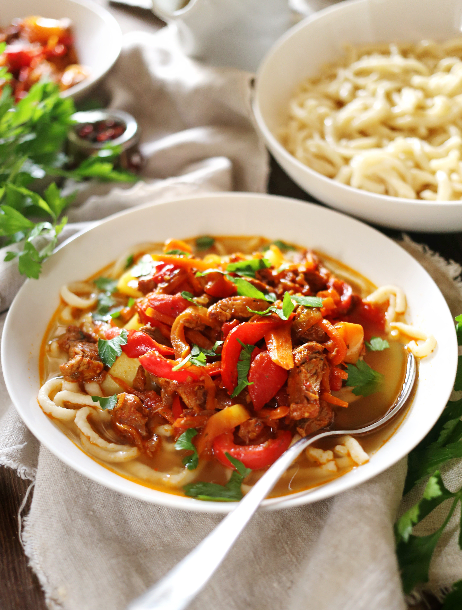

Это среднеазиатское блюдо часто готовят в Узбекистане, Киргизии, Таджикистане, оно очень популярно и в других странах постсоветского пространства. Где-то оно больше похоже на суп, где-то ближе к второму блюду. Но обязательно с лапшой, которую вытягивают тонкими жгутиками, овощами и мясом. В продаже можно встретить уже готовую лапшу для лагмана, однако лучше приготовить домашнюю, особенно если у вас есть лапшерезка, машинка для пасты или аналогичная насадка для кухонного комбайна. Какое мясо брать, баранину или говядину — выбор за вами. Основной набор овощей — лук, морковь, сладкий перец и помидоры. Кто-то обязательно добавляет картофель и/или редьку, кто-то — баклажаны и капусту, есть рецепты с зеленой фасолью и кабачком. Вообще в лагман лучше класть сезонные овощи, так что каждый раз это будет пусть и привычная еда, но немного на новый лад.